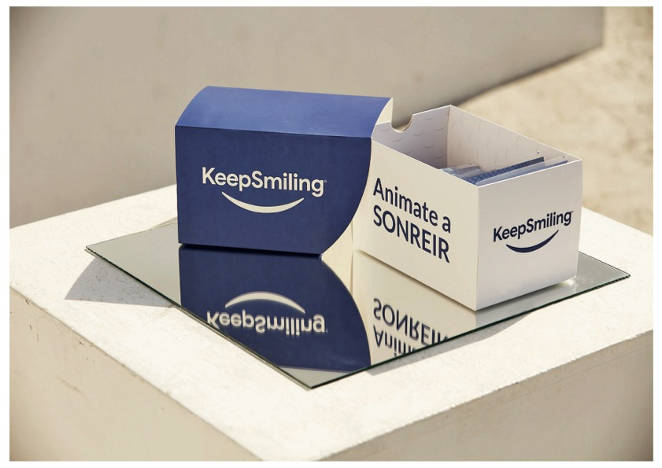
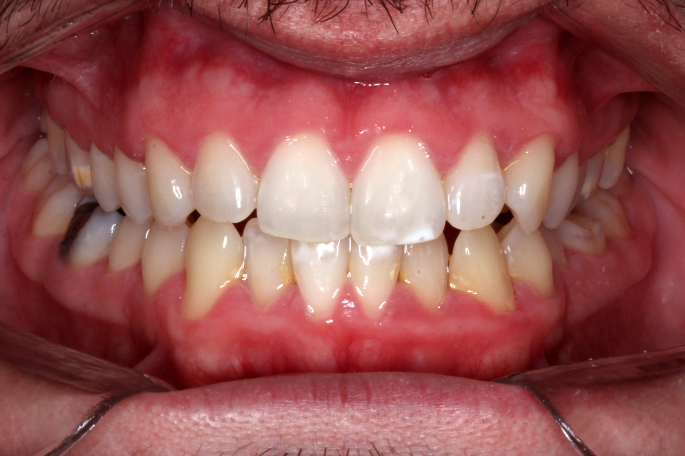
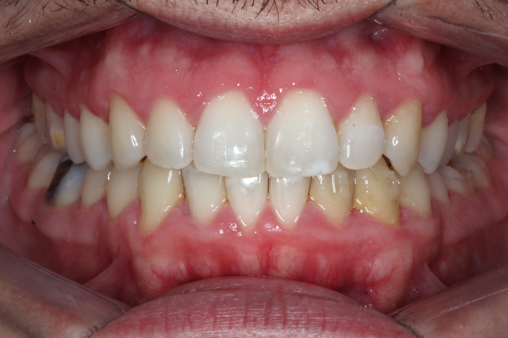
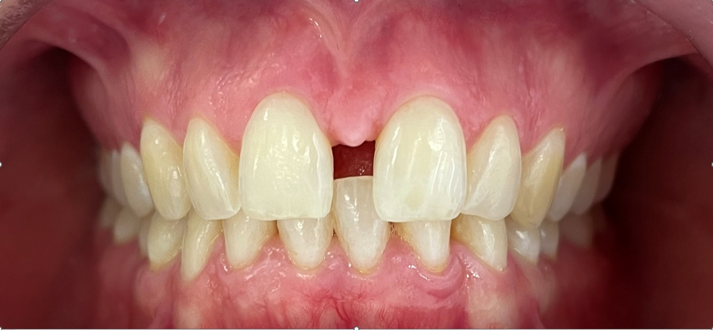
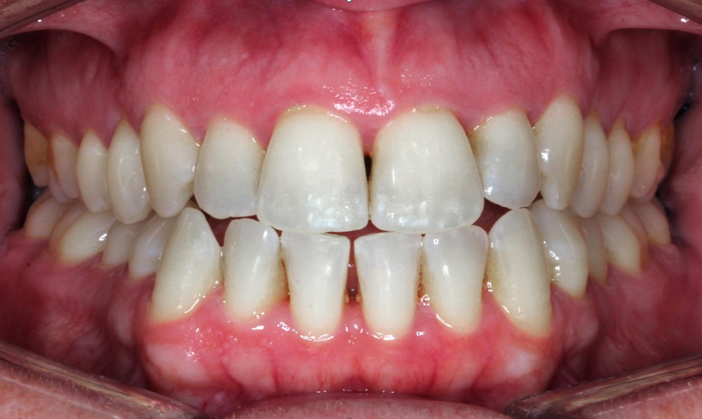
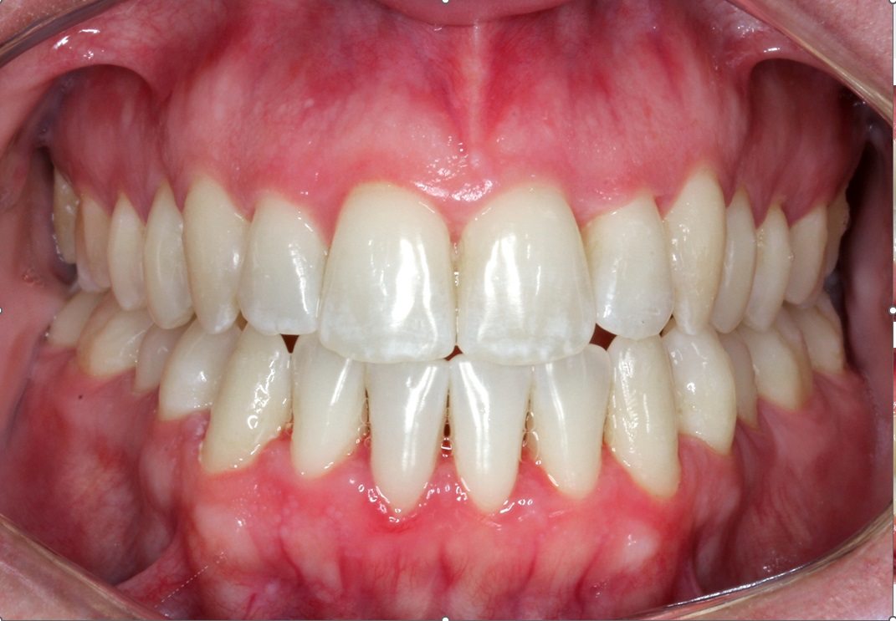

★★★★★
“Tenía miedo de arrancar pero fue la mejor decisión de mi vida. En 8 meses mi sonrisa cambió completamente. El equipo es súper profesional y te acompañan en todo el proceso.”
Corregí la posición de tus dientes con alineadores transparentes y removibles. Sin brackets, sin alambres, sin que nadie se entere.
Respondemos en menos de 1 hora

Los alineadores invisibles son placas transparentes hechas a medida que se colocan sobre los dientes y los mueven gradualmente hasta la posición correcta. A diferencia de los brackets tradicionales, son removibles, cómodos y prácticamente imperceptibles.
Cada juego de alineadores se usa entre 7 y 14 días antes de pasar al siguiente. El tratamiento completo se planifica digitalmente desde el primer día: antes de empezar, ya ves una simulación 3D de cómo va a quedar tu sonrisa.
En nuestro consultorio trabajamos exclusivamente con alineadores KeepSmiling, la marca argentina líder con más de 17 años de trayectoria y +50.000 casos tratados.
Nadie nota que los tenés puestos. Transparentes y adaptados. Ideal para quien trabaja de cara al público.
Sin alambres, sin ajustes dolorosos, sin llagas. Se adaptan a tu rutina diaria.
Los retirás para cepillarte y usar hilo dental normalmente. Sin restricciones para comer.
Controles más espaciados que con brackets. Menos faltas al trabajo.
Antes de empezar ves una simulación digital de tu resultado final.
En muchos casos, resultados en igual o menor tiempo que brackets.
Un proceso claro, personalizado y con acompañamiento profesional en cada etapa.
Visitás el consultorio para un diagnóstico completo con escaneo digital 3D. Te vas con plan y presupuesto.
Nuestras ortodoncistas diseñan tu tratamiento a medida. Ves una simulación de tu resultado final.
Te entregamos tus alineadores KeepSmiling en el consultorio. Te explicamos todo.
Controles regulares hasta lograr el resultado planificado. Seguimiento por WhatsApp incluido.
Los alineadores funcionan para la gran mayoría de los casos: dientes apiñados, espacios entre dientes, mordida abierta, sobremordida y mordida cruzada. Funcionan para adolescentes (desde los 14 años) y adultos de cualquier edad.
Si ya usaste brackets antes y tus dientes se movieron, los alineadores también son una excelente opción para corregirlo.
La única forma de saber con certeza es hacer la evaluación inicial. Es rápida, sin compromiso, y te vas con un diagnóstico completo.
Hacé el test: ¿Sos candidato? →No brackets, no implantes, no limpieza. 100% especialización = mejores resultados.
Profesionales que trabajan exclusivamente con alineadores, todos los días.
Marca argentina líder con +17 años y escaneo digital 3D.
Contacto directo con tu ortodoncista durante todo el tratamiento.
Cada sonrisa es única. Mirá lo que lograron nuestros pacientes con alineadores invisibles.






Cada caso es único. Los resultados dependen de la complejidad del tratamiento.
Historias reales de personas que eligieron transformar su sonrisa con nosotros.
“Tenía miedo de arrancar pero fue la mejor decisión de mi vida. En 8 meses mi sonrisa cambió completamente. El equipo es súper profesional y te acompañan en todo el proceso.”
“Trabajo en contacto con gente todo el día y necesitaba algo discreto. Los alineadores son prácticamente invisibles y super cómodos. Nadie se da cuenta.”
Nuestro consultorio está en Palermo, pero recibimos pacientes de toda la ciudad.
Reservá tu evaluación inicial con diagnóstico 3D. Sin compromiso.
Reservá tu turno →Respondemos en menos de 1 hora · Lunes a Viernes